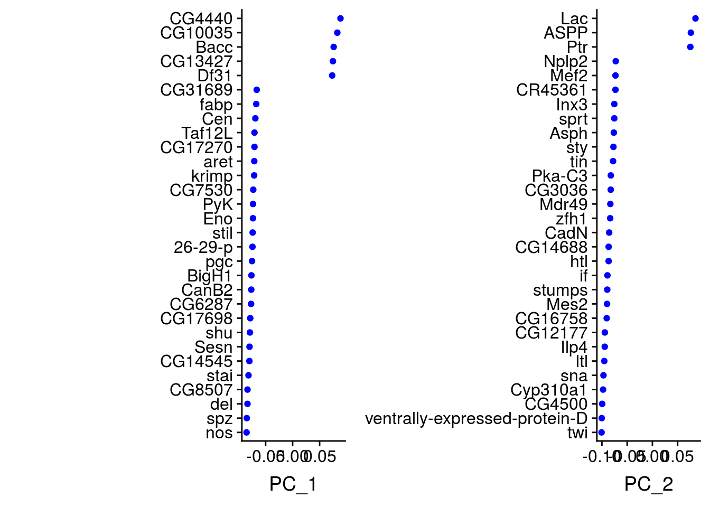
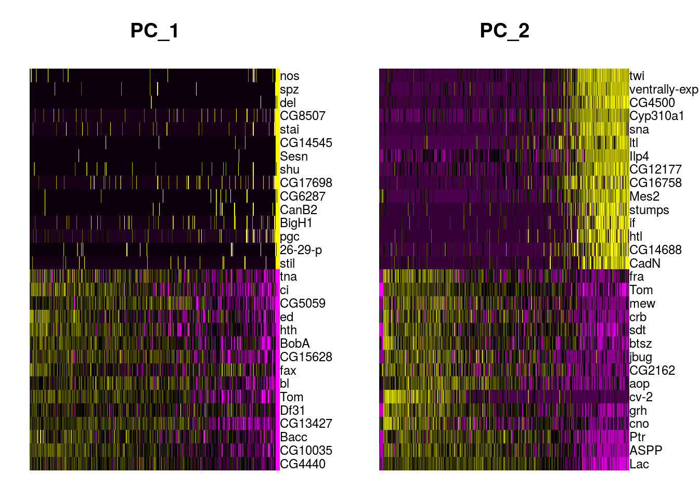
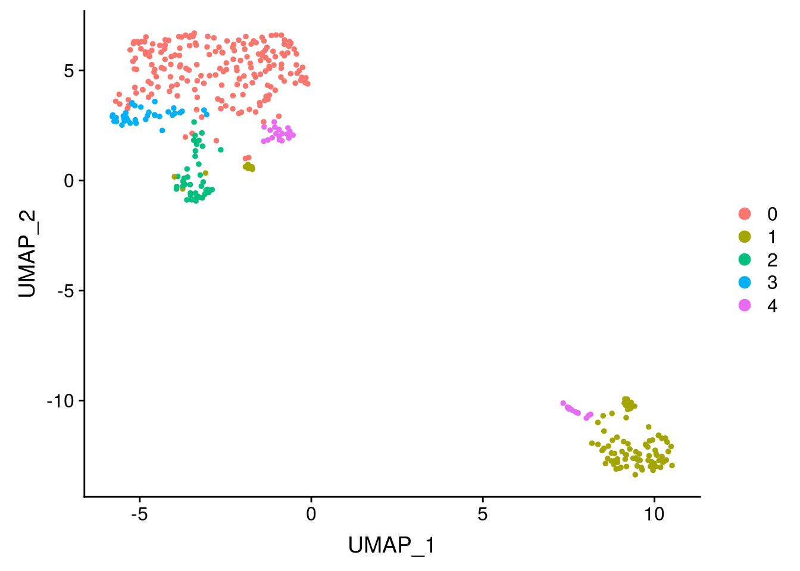
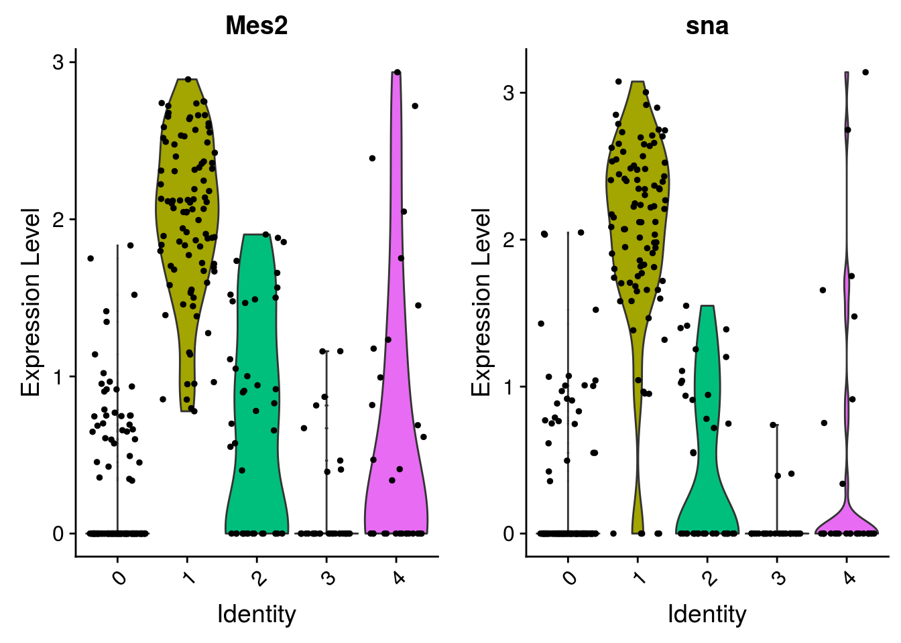

3 Identify cell populations
In this section, we will analyse further the data and try to identify sub-populations of cells. The objective is to create clusters of cells, i.e to make group of cells that share similar expression profile. The mains steps are as follow :
- Select a subset of genes to perfom the downstream analyses
- Perform a dimension reduction
- Cluster the cells
3.1 Select highly variables (hvg)
The downstream analyses (dimension reduction and then clustering) will se performed on the subset of genes. The aims is to exclude genes with minor biological relevance and decrease the computational load.
# Find Variable Genes :
mydata_filtrd <- FindVariableFeatures(mydata_filtrd, selection.method = "vst", nfeatures = 2000,verbose = FALSE)
# Identify the 10 most highly variable genes
top10 <- head(VariableFeatures(mydata_filtrd), 10)
# you can also access the complete list using :
list_hvg = mydata_filtrd@assays$RNA@var.features3.2 Dimension Reduction
3.2.1 Scaling
Expression of each gene is scaled (centered around its mean with a unit standard deviation). This step gives equal weight to all genes while performing the in the dimension reduction, and insure that the most expressed genes do not dominate.
## Centering and scaling data matrixThe scaled data are stored in the ‘scaled’ slot.
By default, scaling is only performed on the variable genes. ### PCA Even though, the gene selection step reduces the data considerably, there is a further need to reduce dimension to keep the most important variability in the data.There are several methods for dimension reduction, the most commonly used is PCA, but you can also check more single-cell specific methods that tries to cope with over-dispersion of the data such as ZIFA and pCMF.
## PC_ 1
## Positive: CG4440, CG10035, Bacc, CG13427, Df31, Tom, bl, fax, CG15628, BobA
## hth, ed, CG5059, ci, tna, Gp150, sqd, sdt, l(3)neo38, N
## Ppa, grh, vfl, Dl, roX1, wech, HmgD, CR43887, ASPP, Brd
## Negative: nos, spz, del, CG8507, stai, CG14545, Sesn, shu, CG17698, CG6287
## CanB2, BigH1, pgc, 26-29-p, stil, Eno, PyK, CG7530, krimp, aret
## CG17270, Taf12L, Cen, fabp, CG31689, Gapdh1, exu, CG17658, CG6967, CG9917
## PC_ 2
## Positive: Lac, ASPP, Ptr, cno, grh, cv-2, aop, CG2162, jbug, btsz
## sdt, crb, mew, Tom, fra, CG34383, 5-HT2A, CG34224, Doc1, CG45263
## blot, hbs, Mipp1, ci, CG10176, pnr, wun2, dpp, bib, CG42788
## Negative: twi, ventrally-expressed-protein-D, CG4500, Cyp310a1, sna, ltl, Ilp4, CG12177, CG16758, Mes2
## stumps, if, htl, CG14688, CadN, zfh1, Mdr49, CG3036, Pka-C3, tin
## sty, Asph, sprt, Inx3, CR45361, Mef2, Nplp2, be, Act87E, Ndae1
## PC_ 3
## Positive: CG8147, srp, ps, Lapsyn, fkh, peb, CG2930, hkb, Doc3, Oatp74D
## CG15236, MRE23, exex, Gmap, Doc2, CG32053, Fas2, DNaseII, Ptx1, egr
## CG31431, ImpE2, kek1, mspo, tup, Doc1, sas, ush, CG18754, Pdp1
## Negative: dan, SoxN, sca, ths, CG6398, CG5059, bl, lea, ImpL2, Imp
## Pino, rdx, neur, RnrS, Meltrin, sbb, brk, Shroom, noc, pyr
## mid, sog, danr, Toll-6, wb, slp1, lok, pico, Atg18a, path
## PC_ 4
## Positive: aay, apt, Cys, sog, CG2930, phyl, mnd, fkh, CG32053, bib
## MRE23, DNaseII, brk, pDsRed, Gmap, RpL10Ab, CG8654, ps, Sox21a, CG18754
## a, CG13427, Lac, CG31431, SoxN, exex, Ocho, Pdp1, vnd, Obp99a
## Negative: net, Ama, Nrt, CrebA, CycE, emc, mirr, zfh1, rst, how
## dap, chrb, Alk, pAbp, Glut4EF, hbs, CG45263, wake, kay, SNCF
## Dtg, CG14427, zen, spen, if, CadN, chn, ptc, vfl, shep
## PC_ 5
## Positive: SNCF, zen, zen2, Ama, C15, Z600, CG13653, rho, net, kay
## Alk, CG8960, alphagamma-element:CR32865, opa, Dtg, CG14111, CG13454, CG13654, wntD, toc
## Ance, rst, dap, ush, Ect4, CG14915, CR44953, egr, E(spl)m5-HLH, Doc3
## Negative: dm, Bsg, Tet, spoon, Dl, CG12535, Trf2, CG9821, mt:CoI, apt
## Hrb27C, sm, pAbp, Ssdp, CG34380, mt:ND1, Oatp74D, fs(1)h, Smr, sqd
## roX1, pum, msi, CR45874, CG45050, CG11138, AGO1, CG43736, east, RapGAP1It is worth analysing the genes that contribute the most to each axes. It may help you to identify genes whose expression decrease/increase together. The DimHeatmap function in Seurat helps you to visualise the genes that are driving the components and allows to get some insight about the heterogeneity of the data.
## PC_ 1
## Positive: CG4440, CG10035, Bacc, CG13427, Df31
## Negative: nos, spz, del, CG8507, stai
## PC_ 2
## Positive: Lac, ASPP, Ptr, cno, grh
## Negative: twi, ventrally-expressed-protein-D, CG4500, Cyp310a1, sna
## PC_ 3
## Positive: CG8147, srp, ps, Lapsyn, fkh
## Negative: dan, SoxN, sca, ths, CG6398
## PC_ 4
## Positive: aay, apt, Cys, sog, CG2930
## Negative: net, Ama, Nrt, CrebA, CycE
## PC_ 5
## Positive: SNCF, zen, zen2, Ama, C15
## Negative: dm, Bsg, Tet, spoon, Dl

After PCA, you need to decide how many components you want to keep (for UMAP and/or clustering). Seurat proposes a statistical methods with the function JackStraw. Alternatively you can plot the explained variance using the ElbowPlot. In practical case, around 30-50 principal components.
3.3 Cluster cells
There are two main steps
- Make a shared Nearest Neighbor graph : identify the k-nearest neighbours of each cell (by default Seurat takes k=20 neighbours). The distance is calculated using the coordinates from the PCA.
- Make clusters (community of cells) using Leiden algorithm. You will need to specify the number of clusters depends on the resolution parameter chosen (the higher, the more group)
## Computing nearest neighbor graph## Computing SNN## Modularity Optimizer version 1.3.0 by Ludo Waltman and Nees Jan van Eck
##
## Number of nodes: 399
## Number of edges: 13157
##
## Running Louvain algorithm...
## Maximum modularity in 10 random starts: 0.7522
## Number of communities: 5
## Elapsed time: 0 secondsUsually the clustering are presented using UMAP which visually separates the group more nicely than PCA.
# If you haven't installed UMAP, you can do so via reticulate::py_install(packages =
# 'umap-learn')
mydata_filtrd <- RunUMAP(mydata_filtrd, dims = 1:nPC)## Warning: The default method for RunUMAP has changed from calling Python UMAP via reticulate to the R-native UWOT using the cosine metric
## To use Python UMAP via reticulate, set umap.method to 'umap-learn' and metric to 'correlation'
## This message will be shown once per session## 00:05:03 UMAP embedding parameters a = 0.9922 b = 1.112## 00:05:03 Read 399 rows and found 20 numeric columns## 00:05:03 Using Annoy for neighbor search, n_neighbors = 30## 00:05:03 Building Annoy index with metric = cosine, n_trees = 50## 0% 10 20 30 40 50 60 70 80 90 100%## [----|----|----|----|----|----|----|----|----|----|## **************************************************|
## 00:05:03 Writing NN index file to temp file /tmp/RtmprDQPdk/file1a8ad32098f2c8
## 00:05:03 Searching Annoy index using 1 thread, search_k = 3000
## 00:05:03 Annoy recall = 100%
## 00:05:03 Commencing smooth kNN distance calibration using 1 thread
## 00:05:04 Initializing from normalized Laplacian + noise
## 00:05:04 Commencing optimization for 500 epochs, with 14528 positive edges
## 00:05:05 Optimization finished ### Cluster identity One clustering is done, your biological work starts. You need to annotate the clusters. One way is to look at genes that are differentially expressed… but we won’t have the time to go in details
# find all markers of cluster 1
cluster1.markers <- FindMarkers(mydata_filtrd, ident.1 = 1, min.pct = 0.25)
head(cluster1.markers, n = 5)## p_val avg_logFC pct.1 pct.2 p_val_adj
## zfh1 2.095262e-57 2.189439 0.905 0.115 3.566974e-53
## if 5.946009e-56 1.396971 0.842 0.069 1.012249e-51
## htl 2.882346e-55 1.171352 0.842 0.069 4.906906e-51
## sna 2.168411e-53 1.824705 0.937 0.181 3.691503e-49
## Mes2 4.547330e-52 1.632343 1.000 0.283 7.741375e-48